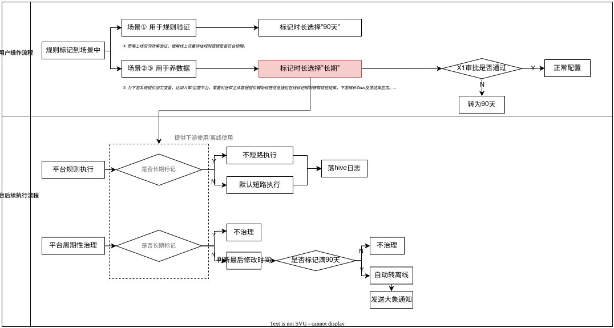

说明：规则在场景中标记
一、背景
标记：用于业务方对配置的策略预执行，不做决策处理；当规则处于标记状态时，规则的决策不会对命中规则的用户产生影响，仅用于业务查看规则的命中情况；
标记周期：90天/长期（默认支持90天，如需长期标记则需要空间负责人审批）
二、执行链路

三、操作指南
如何标记一条策略？
如何使用线上流量上下文加工离线特征？
当标记周期选择「长期」时，会自动全执行标记规则，全量计算特征落日志。配置「长期」的操作方式见下方⬇️
如何长期标记一条策略？
- 审批通知发送机制：先判断申请人直系leader/同组同学（包含用户自己）是否在空间负责人中。如果在，上线申请只推送申请人直系leader/同组同学（包含用户自己）；如果leader/同组同学 都不在空间负责人列表，则将申请发送至空间负责人全员。